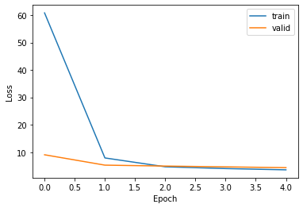
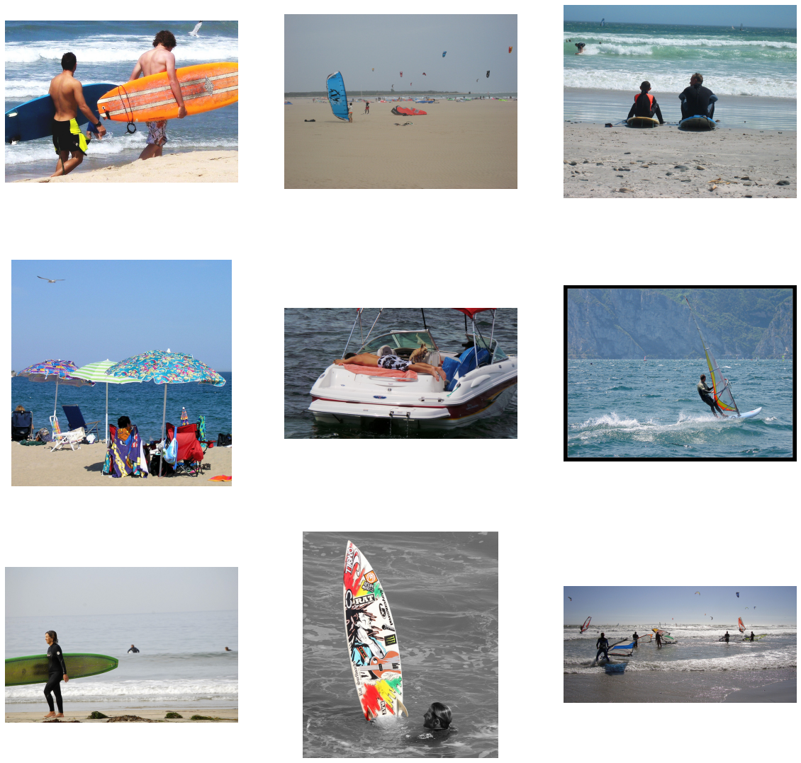

Natural language image search with a Dual Encoder
Author: Khalid Salama
Date created: 2021/01/30
Last modified: 2021/01/30
Description: Implementation of a dual encoder model for retrieving images that match natural language queries.

Introduction
The example demonstrates how to build a dual encoder (also known as two-tower) neural network model to search for images using natural language. The model is inspired by the CLIP approach, introduced by Alec Radford et al. The idea is to train a vision encoder and a text encoder jointly to project the representation of images and their captions into the same embedding space, such that the caption embeddings are located near the embeddings of the images they describe.
This example requires TensorFlow 2.4 or higher. In addition, TensorFlow Hub and TensorFlow Text are required for the BERT model, and TensorFlow Addons is required for the AdamW optimizer. These libraries can be installed using the following command:
pip install -q -U tensorflow-hub tensorflow-text tensorflow-addons
Setup
import os
import collections
import json
import numpy as np
import tensorflow as tf
from tensorflow import keras
from tensorflow.keras import layers
import tensorflow_hub as hub
import tensorflow_text as text
import tensorflow_addons as tfa
import matplotlib.pyplot as plt
import matplotlib.image as mpimg
from tqdm import tqdm
# Suppressing tf.hub warnings
tf.get_logger().setLevel("ERROR")
Prepare the data
We will use the MS-COCO dataset to train our dual encoder model. MS-COCO contains over 82,000 images, each of which has at least 5 different caption annotations. The dataset is usually used for image captioning tasks, but we can repurpose the image-caption pairs to train our dual encoder model for image search.
Download and extract the data
First, let's download the dataset, which consists of two compressed folders: one with images, and the other—with associated image captions. Note that the compressed images folder is 13GB in size.
root_dir = "datasets"
annotations_dir = os.path.join(root_dir, "annotations")
images_dir = os.path.join(root_dir, "train2014")
tfrecords_dir = os.path.join(root_dir, "tfrecords")
annotation_file = os.path.join(annotations_dir, "captions_train2014.json")
# Download caption annotation files
if not os.path.exists(annotations_dir):
annotation_zip = tf.keras.utils.get_file(
"captions.zip",
cache_dir=os.path.abspath("."),
origin="http://images.cocodataset.org/annotations/annotations_trainval2014.zip",
extract=True,
)
os.remove(annotation_zip)
# Download image files
if not os.path.exists(images_dir):
image_zip = tf.keras.utils.get_file(
"train2014.zip",
cache_dir=os.path.abspath("."),
origin="http://images.cocodataset.org/zips/train2014.zip",
extract=True,
)
os.remove(image_zip)
print("Dataset is downloaded and extracted successfully.")
with open(annotation_file, "r") as f:
annotations = json.load(f)["annotations"]
image_path_to_caption = collections.defaultdict(list)
for element in annotations:
caption = f"{element['caption'].lower().rstrip('.')}"
image_path = images_dir + "/COCO_train2014_" + "%012d.jpg" % (element["image_id"])
image_path_to_caption[image_path].append(caption)
image_paths = list(image_path_to_caption.keys())
print(f"Number of images: {len(image_paths)}")
Downloading data from http://images.cocodataset.org/annotations/annotations_trainval2014.zip
252878848/252872794 [==============================] - 5s 0us/step
Downloading data from http://images.cocodataset.org/zips/train2014.zip
13510574080/13510573713 [==============================] - 394s 0us/step
Dataset is downloaded and extracted successfully.
Number of images: 82783
Process and save the data to TFRecord files
You can change the sample_size parameter to control many image-caption pairs
will be used for training the dual encoder model.
In this example we set train_size to 30,000 images,
which is about 35% of the dataset. We use 2 captions for each
image, thus producing 60,000 image-caption pairs. The size of the training set
affects the quality of the produced encoders, but more examples would lead to
longer training time.
train_size = 30000
valid_size = 5000
captions_per_image = 2
images_per_file = 2000
train_image_paths = image_paths[:train_size]
num_train_files = int(np.ceil(train_size / images_per_file))
train_files_prefix = os.path.join(tfrecords_dir, "train")
valid_image_paths = image_paths[-valid_size:]
num_valid_files = int(np.ceil(valid_size / images_per_file))
valid_files_prefix = os.path.join(tfrecords_dir, "valid")
tf.io.gfile.makedirs(tfrecords_dir)
def bytes_feature(value):
return tf.train.Feature(bytes_list=tf.train.BytesList(value=[value]))
def create_example(image_path, caption):
feature = {
"caption": bytes_feature(caption.encode()),
"raw_image": bytes_feature(tf.io.read_file(image_path).numpy()),
}
return tf.train.Example(features=tf.train.Features(feature=feature))
def write_tfrecords(file_name, image_paths):
caption_list = []
image_path_list = []
for image_path in image_paths:
captions = image_path_to_caption[image_path][:captions_per_image]
caption_list.extend(captions)
image_path_list.extend([image_path] * len(captions))
with tf.io.TFRecordWriter(file_name) as writer:
for example_idx in range(len(image_path_list)):
example = create_example(
image_path_list[example_idx], caption_list[example_idx]
)
writer.write(example.SerializeToString())
return example_idx + 1
def write_data(image_paths, num_files, files_prefix):
example_counter = 0
for file_idx in tqdm(range(num_files)):
file_name = files_prefix + "-%02d.tfrecord" % (file_idx)
start_idx = images_per_file * file_idx
end_idx = start_idx + images_per_file
example_counter += write_tfrecords(file_name, image_paths[start_idx:end_idx])
return example_counter
train_example_count = write_data(train_image_paths, num_train_files, train_files_prefix)
print(f"{train_example_count} training examples were written to tfrecord files.")
valid_example_count = write_data(valid_image_paths, num_valid_files, valid_files_prefix)
print(f"{valid_example_count} evaluation examples were written to tfrecord files.")
100%|███████████████████████████████████████████████████████████████████████████████████████████████████████████████████████████| 15/15 [03:19<00:00, 13.27s/it]
0%| | 0/3 [00:00<?, ?it/s]
60000 training examples were written to tfrecord files.
100%|█████████████████████████████████████████████████████████████████████████████████████████████████████████████████████████████| 3/3 [00:33<00:00, 11.07s/it]
10000 evaluation examples were written to tfrecord files.
Create tf.data.Dataset for training and evaluation
feature_description = {
"caption": tf.io.FixedLenFeature([], tf.string),
"raw_image": tf.io.FixedLenFeature([], tf.string),
}
def read_example(example):
features = tf.io.parse_single_example(example, feature_description)
raw_image = features.pop("raw_image")
features["image"] = tf.image.resize(
tf.image.decode_jpeg(raw_image, channels=3), size=(299, 299)
)
return features
def get_dataset(file_pattern, batch_size):
return (
tf.data.TFRecordDataset(tf.data.Dataset.list_files(file_pattern))
.map(
read_example,
num_parallel_calls=tf.data.AUTOTUNE,
deterministic=False,
)
.shuffle(batch_size * 10)
.prefetch(buffer_size=tf.data.AUTOTUNE)
.batch(batch_size)
)
Implement the projection head
The projection head is used to transform the image and the text embeddings to the same embedding space with the same dimensionality.
def project_embeddings(
embeddings, num_projection_layers, projection_dims, dropout_rate
):
projected_embeddings = layers.Dense(units=projection_dims)(embeddings)
for _ in range(num_projection_layers):
x = tf.nn.gelu(projected_embeddings)
x = layers.Dense(projection_dims)(x)
x = layers.Dropout(dropout_rate)(x)
x = layers.Add()([projected_embeddings, x])
projected_embeddings = layers.LayerNormalization()(x)
return projected_embeddings
Implement the vision encoder
In this example, we use Xception from Keras Applications as the base for the vision encoder.
def create_vision_encoder(
num_projection_layers, projection_dims, dropout_rate, trainable=False
):
# Load the pre-trained Xception model to be used as the base encoder.
xception = keras.applications.Xception(
include_top=False, weights="imagenet", pooling="avg"
)
# Set the trainability of the base encoder.
for layer in xception.layers:
layer.trainable = trainable
# Receive the images as inputs.
inputs = layers.Input(shape=(299, 299, 3), name="image_input")
# Preprocess the input image.
xception_input = tf.keras.applications.xception.preprocess_input(inputs)
# Generate the embeddings for the images using the xception model.
embeddings = xception(xception_input)
# Project the embeddings produced by the model.
outputs = project_embeddings(
embeddings, num_projection_layers, projection_dims, dropout_rate
)
# Create the vision encoder model.
return keras.Model(inputs, outputs, name="vision_encoder")
Implement the text encoder
We use BERT from TensorFlow Hub as the text encoder
def create_text_encoder(
num_projection_layers, projection_dims, dropout_rate, trainable=False
):
# Load the BERT preprocessing module.
preprocess = hub.KerasLayer(
"https://tfhub.dev/tensorflow/bert_en_uncased_preprocess/2",
name="text_preprocessing",
)
# Load the pre-trained BERT model to be used as the base encoder.
bert = hub.KerasLayer(
"https://tfhub.dev/tensorflow/small_bert/bert_en_uncased_L-4_H-512_A-8/1",
"bert",
)
# Set the trainability of the base encoder.
bert.trainable = trainable
# Receive the text as inputs.
inputs = layers.Input(shape=(), dtype=tf.string, name="text_input")
# Preprocess the text.
bert_inputs = preprocess(inputs)
# Generate embeddings for the preprocessed text using the BERT model.
embeddings = bert(bert_inputs)["pooled_output"]
# Project the embeddings produced by the model.
outputs = project_embeddings(
embeddings, num_projection_layers, projection_dims, dropout_rate
)
# Create the text encoder model.
return keras.Model(inputs, outputs, name="text_encoder")
Implement the dual encoder
To calculate the loss, we compute the pairwise dot-product similarity between
each caption_i and images_j in the batch as the predictions.
The target similarity between caption_i and image_j is computed as
the average of the (dot-product similarity between caption_i and caption_j)
and (the dot-product similarity between image_i and image_j).
Then, we use crossentropy to compute the loss between the targets and the predictions.
class DualEncoder(keras.Model):
def __init__(self, text_encoder, image_encoder, temperature=1.0, **kwargs):
super().__init__(**kwargs)
self.text_encoder = text_encoder
self.image_encoder = image_encoder
self.temperature = temperature
self.loss_tracker = keras.metrics.Mean(name="loss")
@property
def metrics(self):
return [self.loss_tracker]
def call(self, features, training=False):
# Place each encoder on a separate GPU (if available).
# TF will fallback on available devices if there are fewer than 2 GPUs.
with tf.device("/gpu:0"):
# Get the embeddings for the captions.
caption_embeddings = text_encoder(features["caption"], training=training)
with tf.device("/gpu:1"):
# Get the embeddings for the images.
image_embeddings = vision_encoder(features["image"], training=training)
return caption_embeddings, image_embeddings
def compute_loss(self, caption_embeddings, image_embeddings):
# logits[i][j] is the dot_similarity(caption_i, image_j).
logits = (
tf.matmul(caption_embeddings, image_embeddings, transpose_b=True)
/ self.temperature
)
# images_similarity[i][j] is the dot_similarity(image_i, image_j).
images_similarity = tf.matmul(
image_embeddings, image_embeddings, transpose_b=True
)
# captions_similarity[i][j] is the dot_similarity(caption_i, caption_j).
captions_similarity = tf.matmul(
caption_embeddings, caption_embeddings, transpose_b=True
)
# targets[i][j] = avarage dot_similarity(caption_i, caption_j) and dot_similarity(image_i, image_j).
targets = keras.activations.softmax(
(captions_similarity + images_similarity) / (2 * self.temperature)
)
# Compute the loss for the captions using crossentropy
captions_loss = keras.losses.categorical_crossentropy(
y_true=targets, y_pred=logits, from_logits=True
)
# Compute the loss for the images using crossentropy
images_loss = keras.losses.categorical_crossentropy(
y_true=tf.transpose(targets), y_pred=tf.transpose(logits), from_logits=True
)
# Return the mean of the loss over the batch.
return (captions_loss + images_loss) / 2
def train_step(self, features):
with tf.GradientTape() as tape:
# Forward pass
caption_embeddings, image_embeddings = self(features, training=True)
loss = self.compute_loss(caption_embeddings, image_embeddings)
# Backward pass
gradients = tape.gradient(loss, self.trainable_variables)
self.optimizer.apply_gradients(zip(gradients, self.trainable_variables))
# Monitor loss
self.loss_tracker.update_state(loss)
return {"loss": self.loss_tracker.result()}
def test_step(self, features):
caption_embeddings, image_embeddings = self(features, training=False)
loss = self.compute_loss(caption_embeddings, image_embeddings)
self.loss_tracker.update_state(loss)
return {"loss": self.loss_tracker.result()}
Train the dual encoder model
In this experiment, we freeze the base encoders for text and images, and make only the projection head trainable.
num_epochs = 5 # In practice, train for at least 30 epochs
batch_size = 256
vision_encoder = create_vision_encoder(
num_projection_layers=1, projection_dims=256, dropout_rate=0.1
)
text_encoder = create_text_encoder(
num_projection_layers=1, projection_dims=256, dropout_rate=0.1
)
dual_encoder = DualEncoder(text_encoder, vision_encoder, temperature=0.05)
dual_encoder.compile(
optimizer=tfa.optimizers.AdamW(learning_rate=0.001, weight_decay=0.001)
)
Note that training the model with 60,000 image-caption pairs, with a batch size of 256, takes around 12 minutes per epoch using a V100 GPU accelerator. If 2 GPUs are available, the epoch takes around 8 minutes.
print(f"Number of GPUs: {len(tf.config.list_physical_devices('GPU'))}")
print(f"Number of examples (caption-image pairs): {train_example_count}")
print(f"Batch size: {batch_size}")
print(f"Steps per epoch: {int(np.ceil(train_example_count / batch_size))}")
train_dataset = get_dataset(os.path.join(tfrecords_dir, "train-*.tfrecord"), batch_size)
valid_dataset = get_dataset(os.path.join(tfrecords_dir, "valid-*.tfrecord"), batch_size)
# Create a learning rate scheduler callback.
reduce_lr = keras.callbacks.ReduceLROnPlateau(
monitor="val_loss", factor=0.2, patience=3
)
# Create an early stopping callback.
early_stopping = tf.keras.callbacks.EarlyStopping(
monitor="val_loss", patience=5, restore_best_weights=True
)
history = dual_encoder.fit(
train_dataset,
epochs=num_epochs,
validation_data=valid_dataset,
callbacks=[reduce_lr, early_stopping],
)
print("Training completed. Saving vision and text encoders...")
vision_encoder.save("vision_encoder")
text_encoder.save("text_encoder")
print("Models are saved.")
Number of GPUs: 2
Number of examples (caption-image pairs): 60000
Batch size: 256
Steps per epoch: 235
Epoch 1/5
235/235 [==============================] - 573s 2s/step - loss: 60.8318 - val_loss: 9.0531
Epoch 2/5
235/235 [==============================] - 553s 2s/step - loss: 7.8959 - val_loss: 5.2654
Epoch 3/5
235/235 [==============================] - 541s 2s/step - loss: 4.6644 - val_loss: 4.9260
Epoch 4/5
235/235 [==============================] - 538s 2s/step - loss: 4.0188 - val_loss: 4.6312
Epoch 5/5
235/235 [==============================] - 539s 2s/step - loss: 3.5555 - val_loss: 4.3503
Training completed. Saving vision and text encoders...
Models are saved.
Plotting the training loss:
plt.plot(history.history["loss"])
plt.plot(history.history["val_loss"])
plt.ylabel("Loss")
plt.xlabel("Epoch")
plt.legend(["train", "valid"], loc="upper right")
plt.show()

Search for images using natural language queries
We can then retrieve images corresponding to natural language queries via the following steps:
- Generate embeddings for the images by feeding them into the
vision_encoder. - Feed the natural language query to the
text_encoderto generate a query embedding. - Compute the similarity between the query embedding and the image embeddings in the index to retrieve the indices of the top matches.
- Look up the paths of the top matching images to display them.
Note that, after training the dual encoder, only the fine-tuned vision_encoder
and text_encoder models will be used, while the dual_encoder model will be discarded.
Generate embeddings for the images
We load the images and feed them into the vision_encoder to generate their embeddings.
In large scale systems, this step is performed using a parallel data processing framework,
such as Apache Spark or Apache Beam.
Generating the image embeddings may take several minutes.
print("Loading vision and text encoders...")
vision_encoder = keras.models.load_model("vision_encoder")
text_encoder = keras.models.load_model("text_encoder")
print("Models are loaded.")
def read_image(image_path):
image_array = tf.image.decode_jpeg(tf.io.read_file(image_path), channels=3)
return tf.image.resize(image_array, (299, 299))
print(f"Generating embeddings for {len(image_paths)} images...")
image_embeddings = vision_encoder.predict(
tf.data.Dataset.from_tensor_slices(image_paths).map(read_image).batch(batch_size),
verbose=1,
)
print(f"Image embeddings shape: {image_embeddings.shape}.")
Loading vision and text encoders...
Models are loaded.
Generating embeddings for 82783 images...
324/324 [==============================] - 437s 1s/step
Image embeddings shape: (82783, 256).
Retrieve relevant images
In this example, we use exact matching by computing the dot product similarity between the input query embedding and the image embeddings, and retrieve the top k matches. However, approximate similarity matching, using frameworks like ScaNN, Annoy, or Faiss is preferred in real-time use cases to scale with a large number of images.
def find_matches(image_embeddings, queries, k=9, normalize=True):
# Get the embedding for the query.
query_embedding = text_encoder(tf.convert_to_tensor(queries))
# Normalize the query and the image embeddings.
if normalize:
image_embeddings = tf.math.l2_normalize(image_embeddings, axis=1)
query_embedding = tf.math.l2_normalize(query_embedding, axis=1)
# Compute the dot product between the query and the image embeddings.
dot_similarity = tf.matmul(query_embedding, image_embeddings, transpose_b=True)
# Retrieve top k indices.
results = tf.math.top_k(dot_similarity, k).indices.numpy()
# Return matching image paths.
return [[image_paths[idx] for idx in indices] for indices in results]
Set the query variable to the type of images you want to search for.
Try things like: 'a plate of healthy food',
'a woman wearing a hat is walking down a sidewalk',
'a bird sits near to the water', or 'wild animals are standing in a field'.
query = "a family standing next to the ocean on a sandy beach with a surf board"
matches = find_matches(image_embeddings, [query], normalize=True)[0]
plt.figure(figsize=(20, 20))
for i in range(9):
ax = plt.subplot(3, 3, i + 1)
plt.imshow(mpimg.imread(matches[i]))
plt.axis("off")

Evaluate the retrieval quality
To evaluate the dual encoder model, we use the captions as queries. We use the out-of-training-sample images and captions to evaluate the retrieval quality, using top k accuracy. A true prediction is counted if, for a given caption, its associated image is retrieved within the top k matches.
def compute_top_k_accuracy(image_paths, k=100):
hits = 0
num_batches = int(np.ceil(len(image_paths) / batch_size))
for idx in tqdm(range(num_batches)):
start_idx = idx * batch_size
end_idx = start_idx + batch_size
current_image_paths = image_paths[start_idx:end_idx]
queries = [
image_path_to_caption[image_path][0] for image_path in current_image_paths
]
result = find_matches(image_embeddings, queries, k)
hits += sum(
[
image_path in matches
for (image_path, matches) in list(zip(current_image_paths, result))
]
)
return hits / len(image_paths)
print("Scoring training data...")
train_accuracy = compute_top_k_accuracy(train_image_paths)
print(f"Train accuracy: {round(train_accuracy * 100, 3)}%")
print("Scoring evaluation data...")
eval_accuracy = compute_top_k_accuracy(image_paths[train_size:])
print(f"Eval accuracy: {round(eval_accuracy * 100, 3)}%")
0%| | 0/118 [00:00<?, ?it/s]
Scoring training data...
100%|█████████████████████████████████████████████████████████████████████████████████████████████████████████████████████████| 118/118 [04:12<00:00, 2.14s/it]
0%| | 0/207 [00:00<?, ?it/s]
Train accuracy: 13.373%
Scoring evaluation data...
100%|█████████████████████████████████████████████████████████████████████████████████████████████████████████████████████████| 207/207 [07:23<00:00, 2.14s/it]
Eval accuracy: 6.235%
Final remarks
You can obtain better results by increasing the size of the training sample,
train for more epochs, explore other base encoders for images and text,
set the base encoders to be trainable, and tune the hyperparameters,
especially the temperature for the softmax in the loss computation.
Example available on HuggingFace
| Trained Model | Demo |
|---|---|